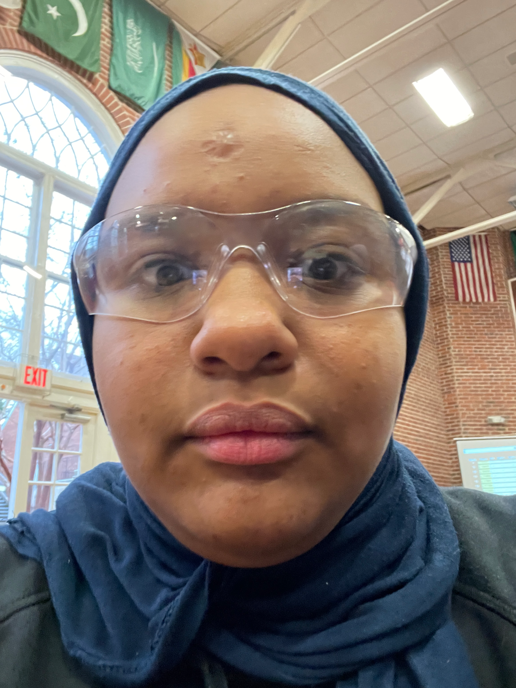

I am a 16 year old in my Junior year of high school at Wake Early College of Information an Biotechnologies. I am also a Computer Programming Major.
I was born in NC, where I live in the captial city, Raleigh. But I orginally from Cario, Egypt. I moved to Egypt when I was 1, but moved back when I was 6.
The main reason why I chose to major in computer programming and to come to this school to explore coding and more spesifcally computer engineering. In 8th grade I took a computer science class and really loved it, so it inspired me to pursue it as a carrer
This school and major allows me to explore computing and programming, I want to be able to learn a lot of programming langauges in the future and work in Quantum Computing
I am not looking into doing a 13th year, Instead I want to go to college majoring Physics and Eletrical Engineering.
Even though my school doesnt offer it. Quantum computing is one of my passions and it combines my 2 interest, Physics and Building things.
WECIB is helpful for the majors I want to go beacuase I need both technical computing expirence and science expirence. Which are skills both my school offers
For example, My school offers a Python class, which is a popular programming langauge in quantum computing, espeically with a special SDK called Quskit, used to program quantum algorthims
After college I want to do Quantum Research. I Probably will have to move out of NC and somewhere like Calfiornia or Connecticut.
I also want to travel the World. One of my hobbies is just exploring the world and some coutnries I want to explore are : Turkey, Greece, Sweden and China.
I also want to learn and be able to speek a lot of different langauges. Right now I know Russian, Arabic, and English but I want to learn Spanish, French, Swedish and Chinese.
One of the goals I want to achive in the future is winning a Nobel Prize in Physics. It might seem unrealistic but who knows. Quantum Computing is a growing field and I wish to make breakthroughs in it.